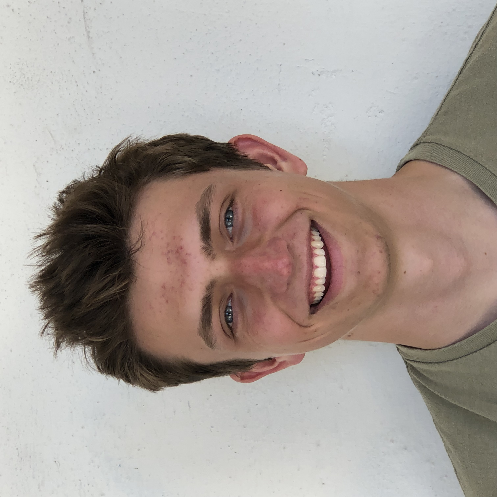
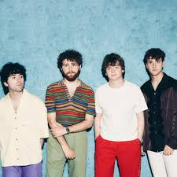
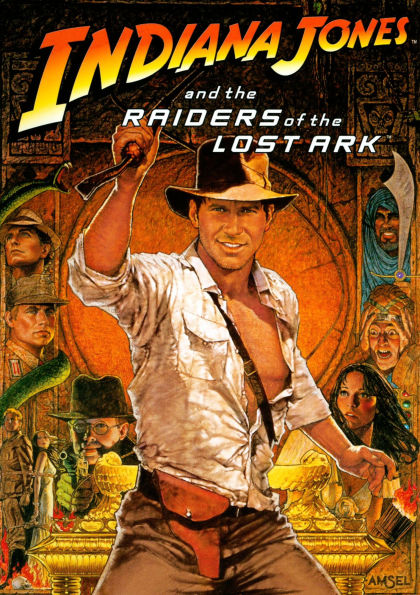
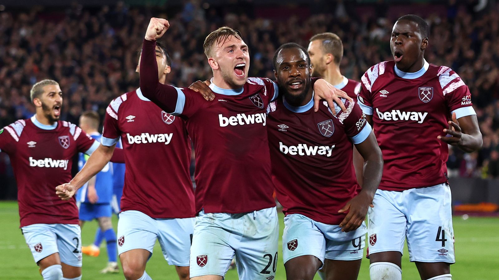
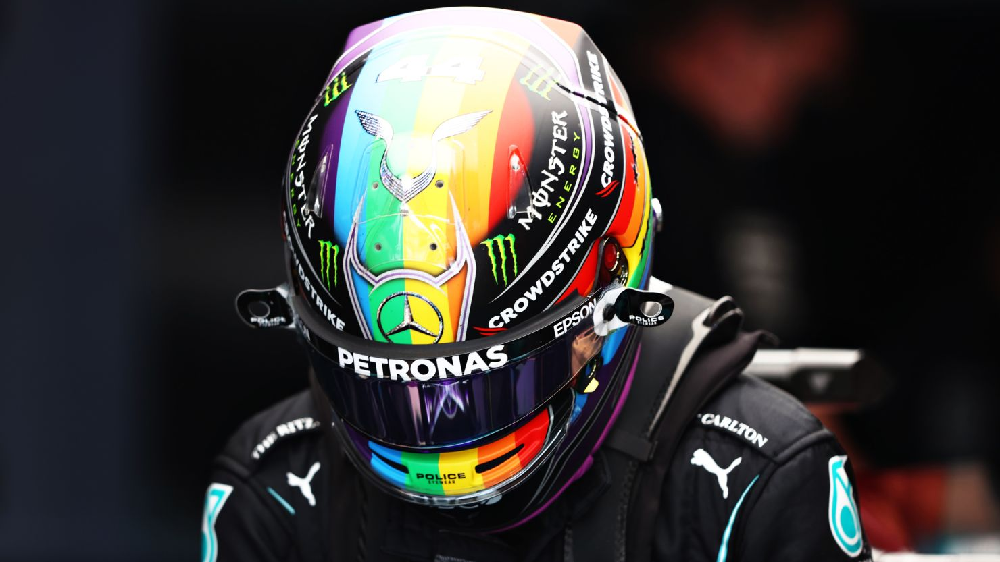

Introduction
Aidan Kaiser

I am a fourth year at Gonzaga University studying Computer Science.
I am interested in Data Science and machine learning as well as web development. I am eager to continue
to learn new strategies and techniques while working on projects with small or large teams. Outside of school,
I enjoy exploring the country by hiking, kayaking or driving. Any day where I can get out of the house is a good day!
Career Summary
Work Experience and Projects
| Experience |
Dates |
Description |
| Flume Water Customer Support Internship |
May 2024 - January 2025 |
Worked at a local water tech company that focuses on preserving water and discovering pipe leaks by using machine learning.
Troubleshooted customer's devices to achieve peak performance while overcoming obstacles unique to the customer's environment.
|
| British Baking Show Data Set Analysis |
October 2024-December 2024 |
Worked with a classmate to predict if a contestant had won a 'Star Baker' based on their 'technical' placements using original classifiers.
Created original kNN, decision tree, and random forest classifiers to understand the foundations of classifiers better.
|
| Website Development |
April 2023 - January 2025 |
Created and implemented multiple websites for school clubs and events that led to an increase in participation and involvement.
Led a small team of students by running meetings and delegating work to upkeep and improve the websites.
|
| Gonzaga Computer Science Club Vice President |
August 2022 - December 2024 |
Assisted in hosting club meetings where we discussed where to go/do after college and helped students meet each other and decide which courses to take.
|
Education and Qualifications
Education
| School |
Dates Attended |
Details |
| San Luis Obispo High School |
2018-2022 |
Graduated in 2022 with no special honors, but I did pretty good and had a fun time. |
| Gonzaga University |
2022-2026 |
Studying computer science as well as taking data science masters courses. Crushing it, doing extracurriculars. |
Qualifications
| Project |
Date |
Details |
| Baking Show Analysis |
December 2024 |
Worked with a small team to perform data analysis on a large public dataset.
Used self-made classifiers to analyze and make predictions for the winner of a baking show.
|
| Flume Water Internship |
April 2024 - Fedruary 2025 |
Worked with customers online to aid them in the installation and functionality of their water sensors.
Worked with head data engineer and discussed new approaches and techniques for improving the product.
|
Interests and Hobbies
- Music

- Movies

- Soccer

- Formula 1

Skills
- Machine Learning
- Data Science
- Team Management
- Smiles